结论：新低破了但幅度不够，底背驰没形成，走势仍定性为下跌中枢震荡。仓位上限 4 成，轻仓、降频、不追涨。 上证 -0.50% 收 3584.58，最低 3565.59 创 60 日新低，但只比 11/16 低点多破 20.98 点（-0.59%）， 「跌破下沿幅度不大」成立 → 不能判底背驰。市场温度 20 度，一类/二类热点双双为空， 人形机器人 -4.59%、AI视频传媒 -8.56% 全线垮掉， 板块重新洗牌。11 只标的全部无买点；中文在线、奥普特、柯力传感三只中线剔除，跟踪池 11 → 8 只。
三个判据逐条对：① 向下创新低成立 —— 最低 3565.59，破 11/16 低 3586.57 共 20.98 点（-0.59%），同时是 60 日低； ② 「幅度不大」也成立 —— 只擦破一层皮，按老师判据这不足以构成底背驰，所以今天只能定性为下跌中枢震荡，不是见底； ③ 向上差得远 —— 最高 3604.98，距见底确认位 3623.12 差 18.14 点（+1.07%），3750 差 4.62%，「突破后回抽确认」一步都没走。
剧本只有两条：震荡后再向下破结实 → 抓底背驰的止跌机会；直接拉上去 → 因跌幅大，动态观察后小仓位尝试，都不是现在动手。 结构上两条腿不同步：科创50 +0.62% 逆势翻红（中芯 +6.59%），创业板 -1.20% 且低 2263.74 同创 60 日新低。 明早开盘英伟达业绩会，可能扰动科技方向，等实际走势给反应再判断。
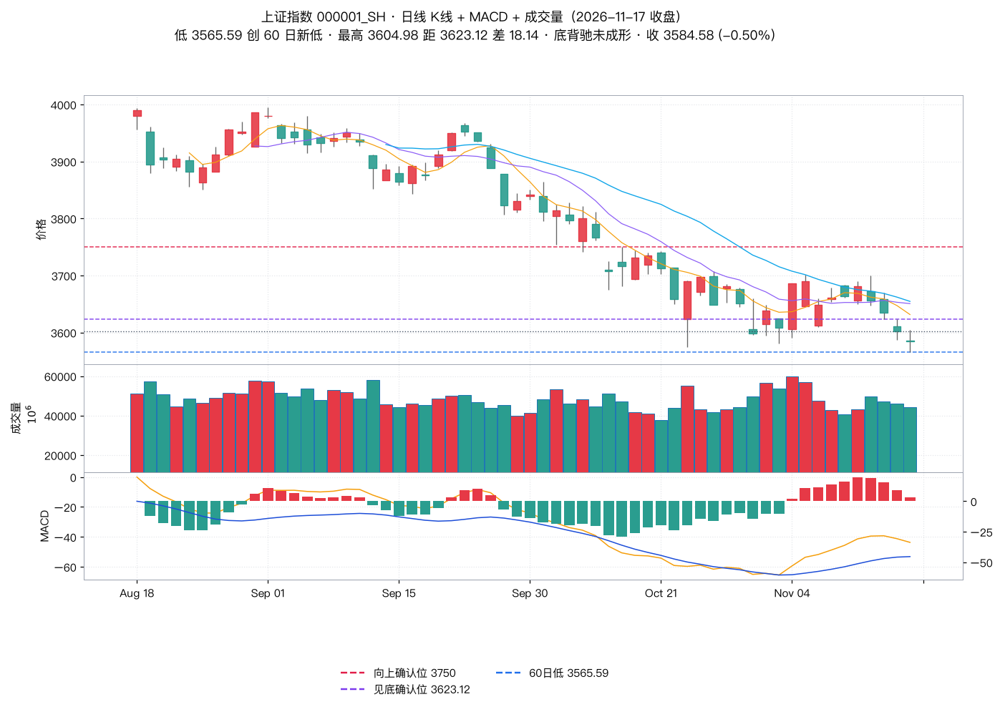
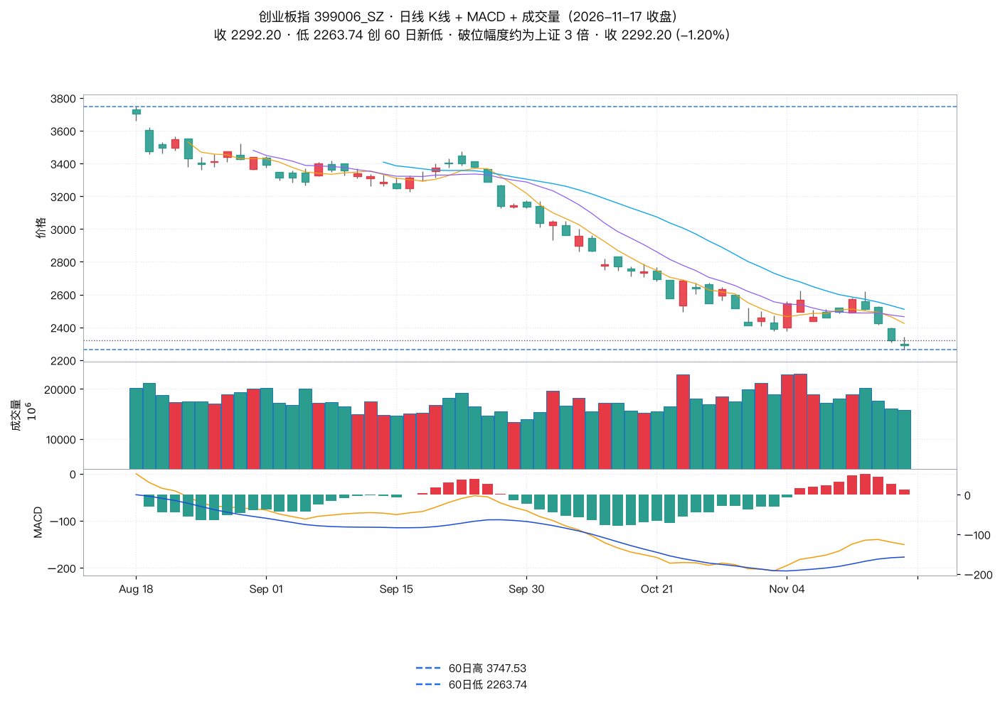
| 方向（自建篮子） | 老师口径 | 实测（均值 · 家数 · 代表股） |
|---|---|---|
| 半导体 | 有点动作，上方压力没突破，横盘震荡；1 分钟底背驰导致的反弹，结构没止跌 | +0.31%，3 涨 3 跌；中芯 +6.59%、北方华创 +4.09%，但海光 -3.93%、兆易 -3.88%、瑞芯微 -1.74% |
| 算力/CPO | 前期强势股补跌 | -2.46%，0 涨 5 跌；新易盛 -4.08%、中际旭创 -3.90%、胜宏 -1.96% |
| AI视频/传媒 | 走势垮掉，板块重新洗牌 | -8.56%，0 涨 7 跌；华策 -13.34%、中文在线 -9.89%、捷成 -8.23%、上海电影 -7.83%；跌停池影视院线 5 家 |
| 人形机器人 | 走势垮掉 | -4.59%，0 涨 9 跌；兆威跌停 -10.00%、长盈 -9.30%、北特 -6.45%、绿的谐波 -4.24% |
| 银行 | 高股息红利可持续跟踪，不建议追涨 | +0.22%，5 涨 0 跌；建行 +0.33%、兴业 +0.30%、农行 +0.26% |
| 电力/高股息 | 同上 | +0.23%，4 涨 1 跌；川投 +0.98%、长电 +0.36%、中国核电 -0.61% |
| 煤炭/石油 | 同上（板块内部分化） | -0.67%，1 涨 4 跌；石化 +0.86%，中海油 -2.91%、中石油 -0.56% |
三件要记的：① 「热点榜无板块上榜」成立 —— 新浪 49 个行业第一只有 +0.30%（开发区），前六全是防守； ② 旧热点全灭（机器人 0涨9跌、传媒 0涨7跌、算力 0涨5跌），跌停 67 家里影视院线 5、汽车零部 4， 涨停仅 37 家且散在 IT服务/环保设备/电子化学，新主线没冒头； ③ 半导体只是「有点动作」：中芯 +6.59%、北方华创 +4.09% 撑着，海光 -3.93%、兆易 -3.88% 拆台，篮子 +0.31% 基本平 —— 这波反弹是 1 分钟底背驰，结构没止跌，不追涨。高股息可跟踪但不追，指数一旦止跌反而要防它下跌。
| 标的 / 题材 | 类别 | 收盘 | 老师定性（老师口径） | 关键位 | 实测印证（日线触达） | 动作 |
|---|---|---|---|---|---|---|
| 药明康德 | 中线 | 146.07 +1.15% | 无买点 · 等突破 157.8 出 15 分钟三买；或日线底分型 + 收盘站上 148 | 157.8 / 148 | 最高 146.80，距 157.8 差 10.99、距 148 差 1.20；逆势 +1.15%，池内最抗跌 | 等 |
| 中国船舶 | 中线 | 33.98 -0.47% | 无买点 · 等翻过 36.75 后出 15 分钟底分型回抽 | 36.75 | 最高 34.31，距 36.75 差 2.44；低 33.38 破昨低，未止跌 | 等 |
| 瑞芯微 | 中线 | 204.96 -1.74% | 无买点 · 激进等站住 220.7；稳健等下上下共振中枢 | 220.7 | 最高 212.38，距 220.7 差 8.32；低 201.67 破昨低、略破位 | 等 |
| 伊利股份 | 中线 | 32.41 +0.65% | 无买点 · 与指数节奏相反，不追涨；持仓看顶背驰 | — | 最高 32.44 创 60 日新高，收 32.41（+0.65%） | 不追 |
| 中文在线 | 剔除 | 23.68 -9.89% | 无买点 · 板块热度降、震荡复杂 → 中线剔除 | — | 收 23.68（-9.89%），低 23.40 跌破 11/09 低 25.65 | 剔除 |
| 海天瑞声 | 中线 | 93.35 -12.06% | 无买点 · 等止跌 + 15 分钟二买；或小级别共振中枢 | — | 收 93.35（-12.06%），低 91.99，对称震荡已破位 | 等 |
| 奥普特 | 剔除 | 129.73 -8.62% | 补跌、结构破位 → 中线剔除 | — | 收 129.73（-8.62%），低 127.52 破中枢下沿 140 达 12.48 元 | 剔除 |
| 柯力传感 | 剔除 | 49.27 -6.19% | 转弱防二卖 → 中线剔除 | — | 收 49.27（-6.19%），低 48.72 破 53 支撑 4.28 元 | 剔除 |
| 兆易创新 | 短线 | 214.56 -3.88% | 无买点 · 233 未收复，等日线有力度底分型 | 233 | 最高 224.60，距 233 差 8.40；低 212.00 创 60 日新低 | 等 |
| 模塑科技 | 短线 | 14.90 -1.91% | 无买点 · 卡 14.95 没止跌，守不住不再跟 | 14.95 | 低 14.67 破 14.95 共 0.28 元，收 14.90（-1.91%） | 等 |
| 长盈精密 | 短线 | 24.18 -9.30% | 无买点 · 看明日能否守住，守住再等日线底分型 | — | 收 24.18（-9.30%），低 23.86 已破 11/02 低 24.57 | 等 |
两只单独说：药明康德池内最强（+1.15%），但离 157.8 差 10.99、连 148 都没站上，抗跌 ≠ 买点； 兆易最低 212.00 创 60 日新低、无底背驰。池子 11 → 8 只（-中文在线、奥普特、柯力传感），剔除是把注意力收回来，不是换股信号。
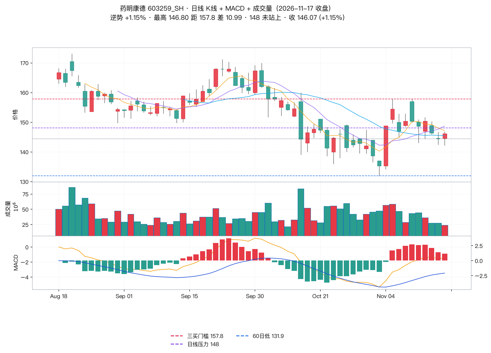
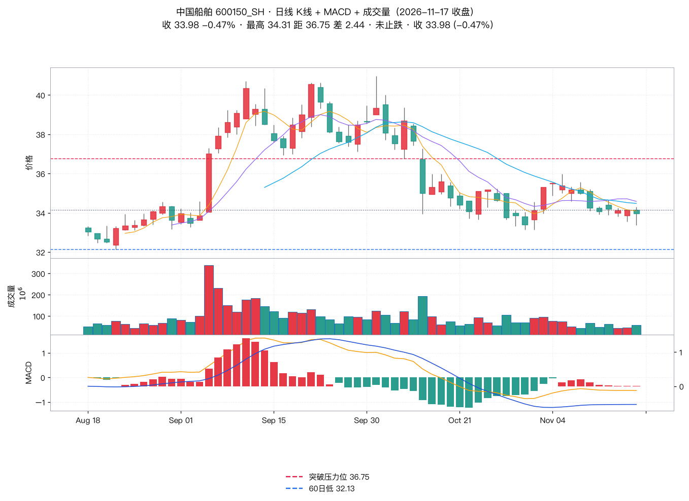
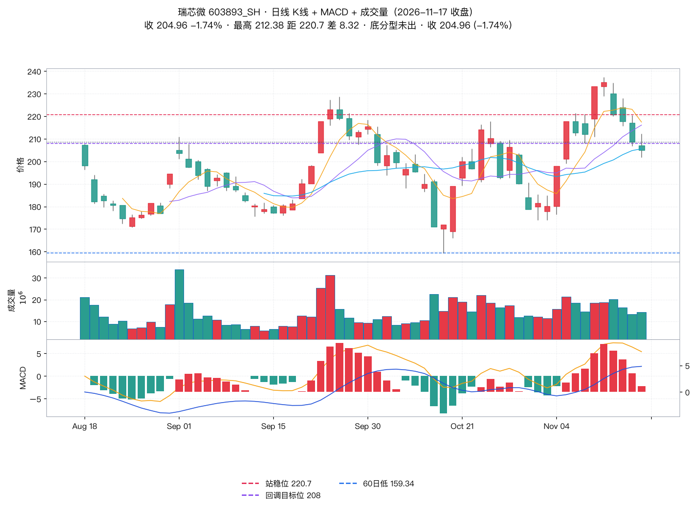
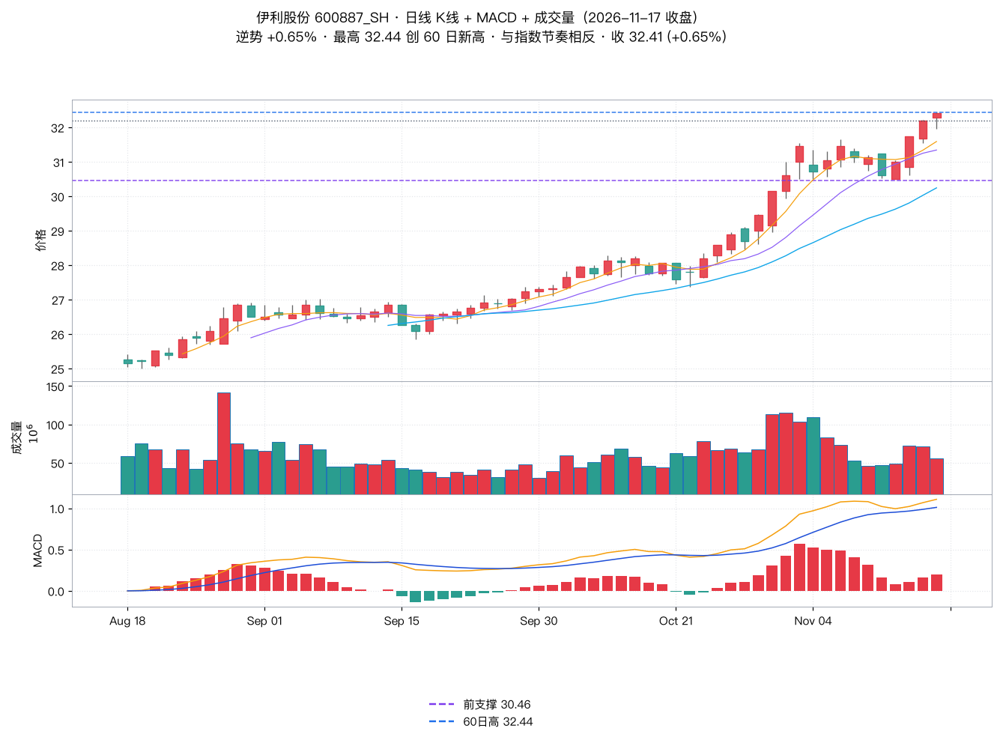
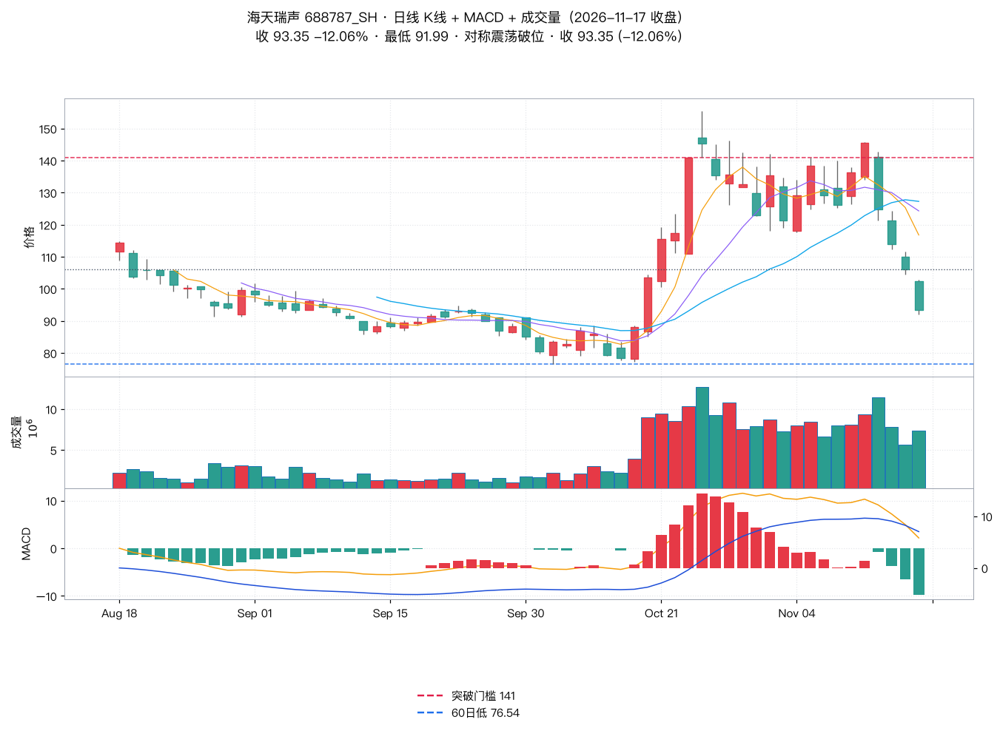
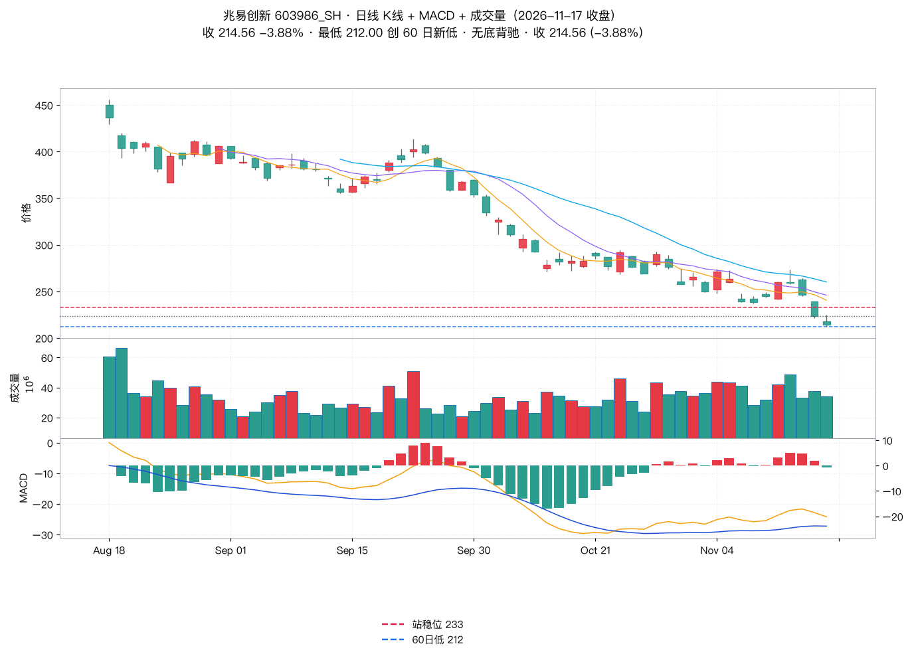
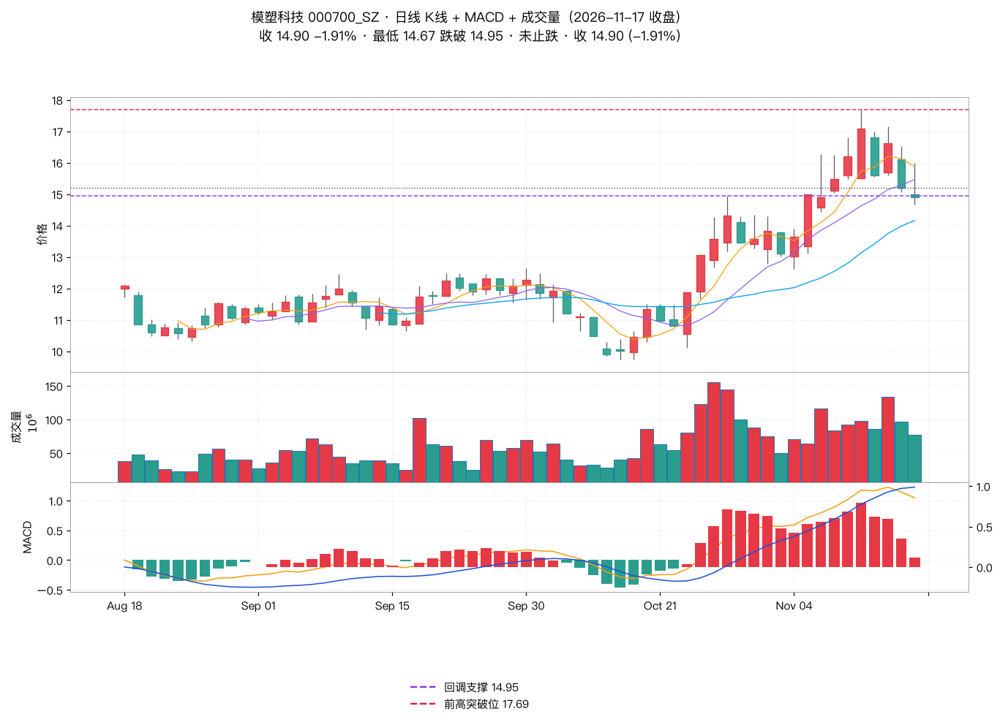
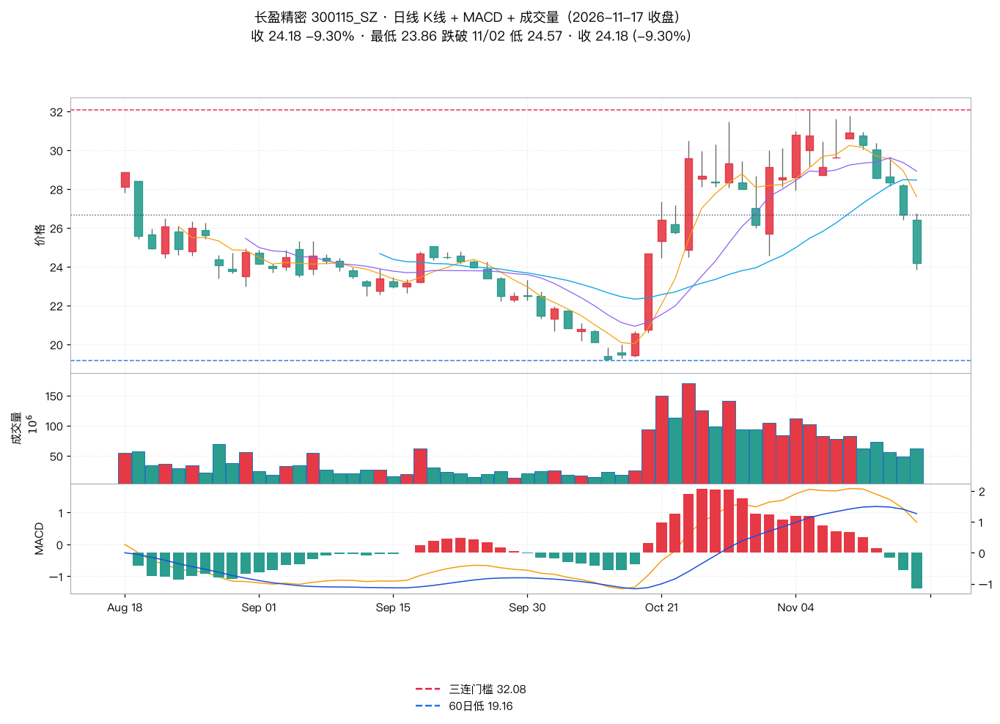
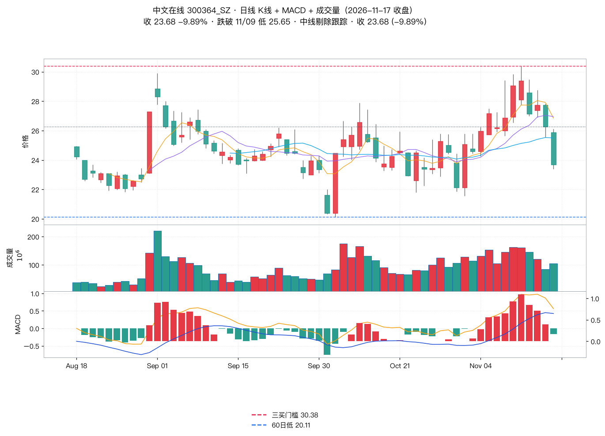
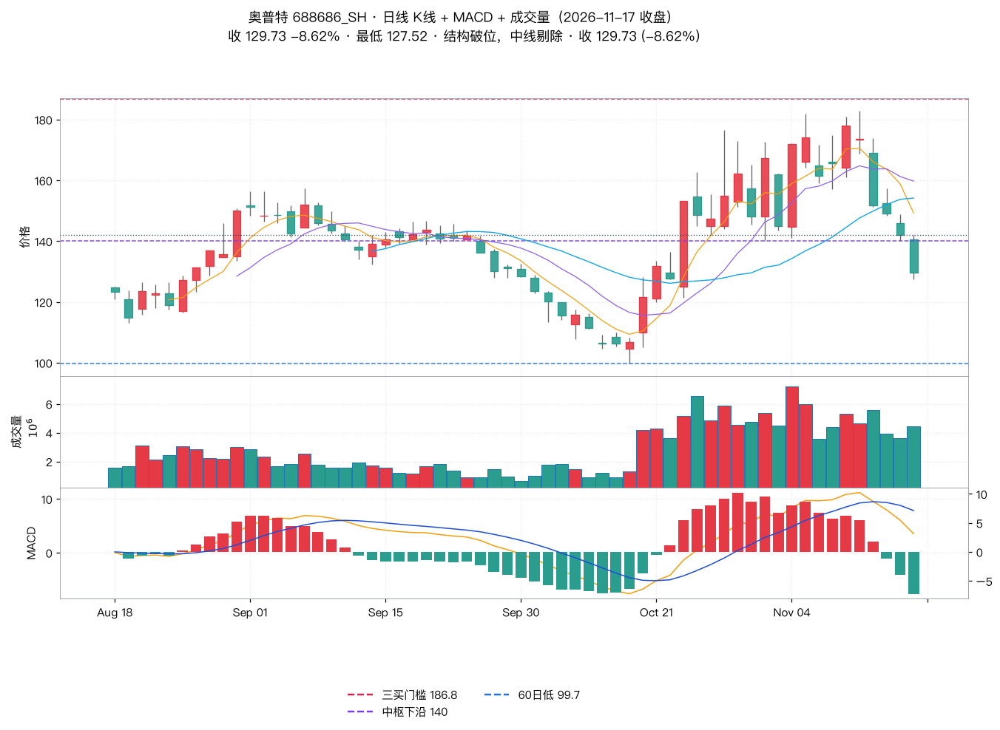
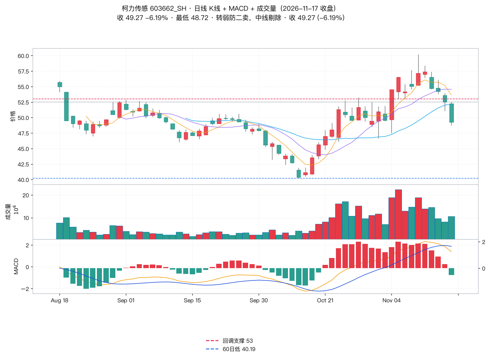
| 老师原文 | 实测 | 判定 |
|---|---|---|
| 「半导体今日有点动作，但上方压力没有突破」 | 篮子 +0.31%（3 涨 3 跌）；内部极端分化 —— 中芯 +6.59%、北方华创 +4.09% vs 海光 -3.93%、兆易 -3.88% | 一致，但分化远大于「有点动作」 |
| 「考虑跌破下沿幅度不大，因此底背驰没形成」 | 仅对上证成立：低 3565.59 只破 11/16 低 20.98 点（-0.59%）；创业板低 2263.74 破前低 -1.96%、深成指与沪深300 同样创 60 日新低 | 上证口径窄 |
| 「长盈精密短线延续下跌，还没有破位」 | 低 23.86 已破 11/02 低 24.57、破 11/16 低 26.43 达 9.7%，创 20 日新低 | 偏乐观 |
来源：都业华《高级班》2026-11-17 收评，执业编号 A0400626100004。仅供参考，不作为买卖依据，据此操作风险自担。投资有风险，入市需谨慎！历史案例不代表未来收益。
口径：同花顺日线 140 根（今日那根用收盘快照补齐）+ 新浪收盘快照；成交额＝上证指数额＋深证成指额；涨跌家数取新浪 5579 只；涨跌停用东财池；板块为自建篮子均值。关键位一律用日线触达判据（当日最高/最低 vs 关键位）。